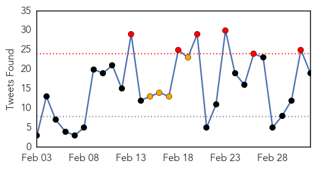

Ebola
30-Day Web Trend
0 alerts, 0 warnings

30-Day Twitter Trend
6 alerts, 4 warnings

Article Locations

Article Confidences

Top Articles:
- 1.000
- ‘We Can't Be Complacent and Think Everything Is Over’: The War Against Ebola Is at a Critical Hour
- 1.000
- Ebola outbreak in West Africa: how workers are trying to stop the spread
- 0.999
- Canada remains committed to domestic preparedness and global fight against Ebola
- 0.999
- Twenty-eight countries have worse health care systems than Liberia’s
- 0.999
- Minister urges EU support for Countries affected by Ebola
- 0.999
- Observer
- 0.999
- Ebola’s lasting legacy
- 0.999
- The Liberian Observer
- 0.998
- W. African Nations Hit by Ebola Seek More Aid From EU
- 0.998
- EU Ebola conference airs response needs, long-term goals
- 0.998
- New Ebola Vaccine Uses Protein From Australian Virus
- 0.997
- Nature News & Comment
- 0.997
- 3 Lessons (Among Many) as a Result of Ebola in Sierra Leone
- 0.997
- MOHS Collaborates with IRC and Partners to Build Capacity on Infection Prevention Control - Sierra Leone
- 0.997
- Just because we stopped paying attention to Ebola doesn’t mean it’s gone
- 0.997
- Ebola conference: From emergency to recovery
- 0.996
- The Ebola Plague: African Heroes and Martyrs
- 0.995
- Texas Health Resources responds to Ebola nurse's lawsuit
- 0.994
- African Leaders Urge 'Marshall Plan' for Ebola Recovery
- 0.994
- Africa: Three words of advice for WHO Africa's new chief
- 0.994
- First Ebola survivors talk of hope and despair in Guinea
- 0.992
- AU welcomes back first group of health workers deployed to fight Ebola
- 0.991
- African leaders urge Ebola ‘Marshall Plan’
- 0.990
- Appeal for Ebola recovery support
- 0.990
- From emergency to recovery: EU mobilises efforts to end Ebola and alleviate its impact
- 0.989
- Demand for this Ebola Drug is Soaring
- 0.989
- Ebola Situation report 4 March 2015 - Sierra Leone
- 0.988
- West African leaders call for post-Ebola support
- 0.986
- Health Workers at TB Annex Demand Hazard Benefits
- 0.986
- Ebola hit countries call for international ‘Marshall Plan’ aid
- 0.985
- EU Mobilizes to End Ebola
- 0.983
- African Nations Say Tide Has Turned Against Ebola
- 0.982
- Nurse who survived Ebola sues Dallas hospital system
- 0.982
- How do we protect our Ebola fighters?
- 0.980
- Global Confab On Ebola Seeks $5bn Pledges
- 0.978
- Engaging the African Diaspora Community on the International Ebola Response
- 0.976
- African leaders urge ‘Marshall Plan’ for Ebola recovery
- 0.975
- Back to School, Though Not Back to Normal, in a Liberia Still Fearful of Ebola
- 0.974
- Newspaper: Nurse who survived Ebola says hospital failed her
- 0.972
- Ebola conference seeks end to West Africa outbreak
- 0.972
- News, Sports, Jobs, Lisbon, Ohio - The Morning Journal
- 0.971
- Italian doctor stricken with Ebola planning African return
- 0.968
- Spotlight: China praised for endeavor to fight Ebola in W. Africa
- 0.966
- Spotlight: China praised for endeavor to fight Ebola in W. Africa - Xinhua
- 0.963
- Ebola-hit countries seek help to repair their economies
- 0.962
- Traditional chiefs join Ebola sensitization
- 0.962
- Is there still a place for the World Health Organisation?
- 0.955
- Work of Cuban Experts Fighting Ebola Highlighted in Brussels
- 0.952
- Christian Aid scales up emergency response to Ebola outbreak in Sierra Leone
- 0.950
- Partnership with European NGOs Gives Georgia NGO Leverage In Ebola Crisis as Fears Arise of Mutation - Liberia
Showing top 50 articles...
Top Tweets:
- 0.939
- the Ebola cases in the US were swiftly handled so today there are no known cases of the disease in the US.
- 0.912
- Ebola Update: 23913 confirmed probable and suspected cases reported in 3 most affected countries with 9714 deaths. EbolaResponse
- 0.815
- RT: @EbolaAlert The Ebola outbreak would have increased countries' spend right now due to the very obvious r…
- 0.795
- Fears for future of Ebola orphanage in Sierra Leone - BBC News http://t.co/JifsjNK9Qy ebola EVD
- 0.774
- North Korea lifts Ebola travel restrictionictions - Washington Times http://t.co/3ZuKXuRmzf ebola EVD
- 0.765
- Ebola's Not Over For Health Care's Volunteers - Wired http://t.co/QojPpdHpuO ebola EVD
- 0.761
- RT: Liberia has gone 11 days with zero new Ebola cases while SierraLeone recorded 17 cases today alone.
- 0.752
- En route to West Africa. Real progress but still many challenges ahead to get to zero cases of Ebola.
- 0.739
- Ebola 'leaves 12000 orphans in Sierra Leone' - The Guardian http://t.co/sQSp5e4e4l ebola EVD
- 0.739
- Could the high number of casualities in Ebola outbreak be due to mismanagement of funds? EbolaFundWatch
- 0.724
- EbolaFundWatch "@BudgITng: An audit of Ebola fund spend in Sierra Leone already confirmed this insinuation to be true at least in SL"
- 0.713
- RT: @EbolaAlert Was distribution of funds to public health labs in West Africa satisfactory or did it need vast improvement? Ebola…
- 0.647
- Are there advantages to auditing Ebola Fund Spend in affected countries? EbolaFundWatch @TackleEbola
- 0.635
- Are there advantages in auditing Ebola Fund Spend in affected countries? EbolaFundWatch @bakarelawal @BudgITng
- 0.634
- Photos. Visit to communities affected by the Ebola outbreak in Liberia @FAOemergencies http://t.co/cHWUEw0Xog
- 0.612
- North Korea and Ebola - The Economist http://t.co/yuix6FJLUD ebola EVD
- 0.612
- North Korea and Ebola - The Economist http://t.co/FSdMKBClxC ebola EVD
- 0.569
- RT: Distressing but important read: Devastating consequences of Ebola outbreak on maternal health http://t.co/dOF1nYSVPB http:…
- 0.513
- RT: @EbolaAlert In EbolaEmergencyResponse spending; there needs to be a Systemic yet outbreak focus. Impact beyond Ebola …
Swine Flu
30-Day Web Trend
17 alerts, 8 warnings

30-Day Twitter Trend
2 alerts, 0 warnings

Article Locations


Article Confidences

Top Articles:
- 1.000
- Swine flu: 1,198 people dead, number of cases cross 22,000
- 1.000
- Swine flu toll touches 1,198; number of cases crosses 22K-mark
- 0.999
- Swine flu symptoms, prevention, treatment: 17 common swine flu questions answered
- 0.999
- 10 more test positive for swine flue
- 0.999
- 84% swine flu deaths in Maharashtra this year result of late medication
- 0.999
- Hospitals don't have labs to detect swine flu in Punjab
- 0.998
- Swine flu claims 43 more lives, toll touches 1,158
- 0.998
- The deadly contours of deadly disease
- 0.998
- Swine flu claims 43 more lives, toll touches 1,158
- 0.997
- H1N1 Mutation Fear Grips State
- 0.997
- 10 more succumb to swine flu in Guj; death toll reaches 302
- 0.994
- No need to panic about swine flu: Health Ministry
- 0.990
- Swine flu bomb ticks
- 0.989
- Swine flu toll in Telangana mounts to 59
- 0.987
- Another 21 swine flu cases confirmed in city
- 0.971
- Preparation taken to prevent swine flu: Nasim - Click Ittefaq
- 0.969
- Centre assisting states on swine flu, Delhi HC told
- 0.964
- Centre assisting states on swine flu, Delhi HC told
- 0.964
- Centre assisting states on swine flu, Delhi HC told
- 0.962
- UAE warns citizens to stay away from India after swine flu spread
- 0.936
- Students, staff with cough or cold to go on leave in Goa
- 0.923
- 11 deaths due to swine flu in TN so far: Govt
- 0.917
- Panel to frame guidelines for swine flu treatment
- 0.895
- UAE warns citizens against travel to India due to spread of swine flu
- 0.781
- Five persons detected with swine flu virus in Assam
- 0.636
- H1N1 scare creates panic in Chennai school
- 0.625
- Arjun Kapoor: Sonam Kapoor Getting Better Slowly
- 0.519
- KUNA : UAE advises nat'ls against travel to India amid swine flu fears
Top Tweets:
-
No tweets found for Mar 04, 2015